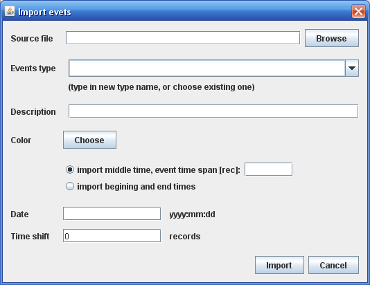

Polecenie dostępne z "Zdarzenia" -> "Import" wyświetla okno dialogowe pozwalające na import zdarzeń z pliku tekstowego.
UWAGA: Narzędzie importu zdarzeń nie obsługuje plików wygenerowanych przez narzędzie eksportu dostępne z menu [Zdarzenia]->[Eksportuj]
Import zdarzeń jest przydatny jeżeli godziny wystąpienia zdareń zawarte są w pliku tekstowym. Jeżeli mamy do dyspozycji długa listę zdarzeń szybciej będzie można przepisać je do pliku tekstowego, niż oznaczać na wykresie.
Import mozna przeprowadzić z plikow zawierających jedną, bądź dwie kolumny. W pierwszym przypadku (jedna kolumna) podana godzina traktowana jest jako środek czasu wystąpienia zdarzenia. Wtedy nalezy dodatkowo określić jaki jest czas zdarzenia. Jeżeli w pliku w pierwszej kolumnie jest początek a w drugiej kolumnie koniec zdarzenia, to można importować zdarzenia o różnej długści.
W oknie dialogowym można określić typ importowanych zdarzeń (wybór z listy rozwijalnej), albo też wpisać w pole listy rozwijalnej nowy typ zdarzenia.
Z jednego pliku tekstowego można importować jedne rodzaj zdarzenia. Import kilku rodzają zdarzeń musi odbywać się z odrębnych plików tekstowych.